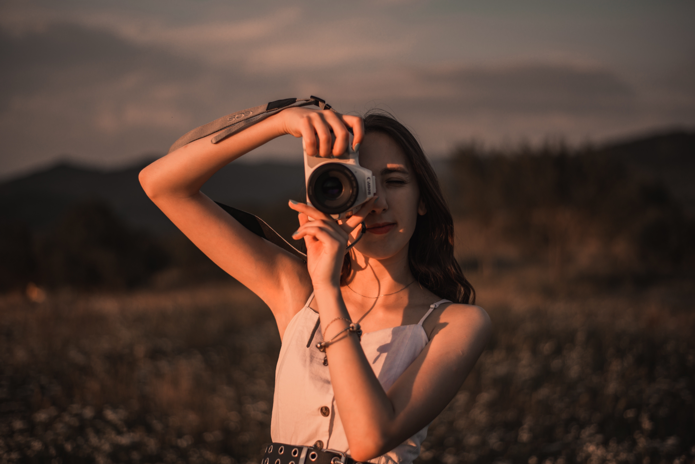

⭐⭐⭐⭐⭐⭐⭐⭐⭐⭐⭐⭐⭐⭐⭐⭐⭐⭐⭐⭐⭐⭐⭐⭐⭐⭐⭐⭐⭐⭐⭐⭐⭐⭐⭐⭐⭐⭐⭐⭐⭐⭐⭐⭐⭐⭐⭐⭐⭐⭐⭐⭐⭐⭐⭐⭐⭐⭐⭐⭐⭐⭐⭐⭐⭐⭐
Daca ai accesat această pagină înseamnă că ești interesat de fotografie...la fel ca mine! Numele meu este Dennysa Popescu și voi fi ghidul tău pe calea fotografiei,
ajutându-te să reușești să creezi minuni în ceea ce privește arta luminii. Acum îți voi mai spune câteva lucruri despre mine, ca să ne putem împrieteni! Încă de când
eram mică am fost atrasă de artă, îmi plăcea mult să desenez și să pictez, îmi plăcea și să decorez, dar cel mai important, îmi plaăcea mult să fac poze. Galeria mea
foto cuprindea pe atunci toate locurile prin care mergeam, peisaje de primăvară cu flori... îmi amintesc că într-o vară am fost cu părinții mei într-o mică excursie
și ne-am oprit pe drum lângă un câmp cu maci unde am reușit să surprind o albinuță pe un mac, aceea fiind o fotografie de care am fost foarte mândră la momentul
respectiv. Primăvara fotografiam floricelele, iar toamna frunzele și iarna zăpada. Fotografia a fost mereu modul meu preferat de a păstra amintiri. De vreo 2 ani încoace
am început să mă joc cu setările imaginilor în diferite aplicații de editare foto și mi-am dat seama că îmi place din ce în ce mai mult fotografia. Telefonul meu păstra
o mulțime de variante de editări ale pozelor. Începuse să îmi placă, mai apoi, să îmi fac poze singură, deoarece așa reușeam să încadrez imaginea așa cum îmi plăcea mie
și pentru asta foloseam self-timer-ul. Făceam tot mai multe poze și aveam tot mai multe idei, dar calitatea foto a unei camere de telefon nu se compară cu calitatea imaginii
pe care o are un aparat foto... așa am ajuns să îmi doresc și să primesc cadou de majorat un aparat foto DSLR. Au trecut cativa ani de atunci și pot spune că am progresat enorm
în ceea ce privește fotografia. Mi-am plimbat aparatul foto cu mine peste tot și mi-am făcut o grămadă de poze, folosind aceeași metodă self-timer de a realiza poze singură,
dar de data asta cu ajutorul unui trepied. Îmi place foarte mult să editez, deoarece acest lucru chiar schimbă o imagine, iar pentruu asta folosesc diferite aplicații.
⭐⭐⭐⭐⭐⭐⭐⭐⭐⭐⭐⭐⭐⭐⭐⭐⭐⭐⭐⭐⭐⭐⭐⭐⭐⭐⭐⭐⭐⭐⭐⭐⭐⭐⭐⭐⭐⭐⭐⭐⭐⭐⭐⭐⭐⭐⭐⭐⭐⭐⭐⭐⭐⭐⭐⭐⭐⭐⭐⭐⭐⭐⭐⭐⭐⭐
 În poza din stângă mă poți observa alături de bunul meu prieten, aparatul foto! După cum am scris și mai sus, îl iau cu mine într-o mulțime de locuri. Acum, să discutăm puțin despre echipamentul necesar pentru a realiza fotografii nemaipomenite.
În primul rând, dacă deții un telefon cu o cameră foarte performantă, este suficient pentru a surprinde fotografii excepționale, însă, daca îți dorești să ai fotografii
de o calitate vizibil profesională, atunci îți recomand achiziționarea unui aparat foto. În ceea ce privește performanța, cele mai cunoscute branduri de pe piață sunt, în momentul de față, Canon, Nikon sau Sony, bineînțeles, în funcție de preferințele fiecăruia.
Prețurile lor variază în funcție de dotări și astfel, de buget. Din moment ce
aparatele vin într-o gamă variată, mai ramâne doar dorința de a crea ceva și imaginația! Ține minte că poți creea oriunde. Există multe trenduri pe internet în care
fotografii creează niște capodopere în locuri de-a dreptul neatrăgătoare. De asemenea, trecând printr-o carantină, au apărut multe trenduri de fotografii în interiorul
locuinței, iar ideile continuă.
Din moment ce am rezolvat cu echipamentul, putem trece la o scurtă discuție despre partea de editare a fotografiilor, deoarece, această parte din întregul proces reprezintă
cu preponderență transformarea unei simple poze în ceva de-a dreptul magic. O să-ți dezvălui câteva trucuri pe care le folosesc eu: prima dată aplic un preset, adică un set de adjustări pentru a crea o armonie între culori, lumină și detalii, după
care trec imaginea prin alte aplicații unde pot adăuga edecte cum ar fi light leaks sau dust. Dacă imaginea este un portret, atunci aceasta va fi supusă unor retușuri
pentru a da pielii un aspect imaculat, deoarece, știm cu toții că se întâmplă să ne confuruntăm cu probleme ale tenului pe care nu ne dorim să le vedem și în imagini.
Acum că am făcut cunoștință, este timpul să trecem la treabă!
PENTRU A AFLA MAI MULTE DESPRE FIECARE TIP DE SEDINTA FOTO TE INVIT SA FACI UN MIC TUR AL BAR-ULUI DE NAVIGARE!!!
💻 Hai să fim prieteni pe social media! Sunt foarte prezentă pe internet, așa că mă poți găsi la următoarele adrese.
Email: dennysa.maria@yahoo.com
Instagram:
- pagina mea personală: @dennysa
- pagina pentru fotografie: @dennysapopescu.ph
- pagina pentru artă: @dennyxart